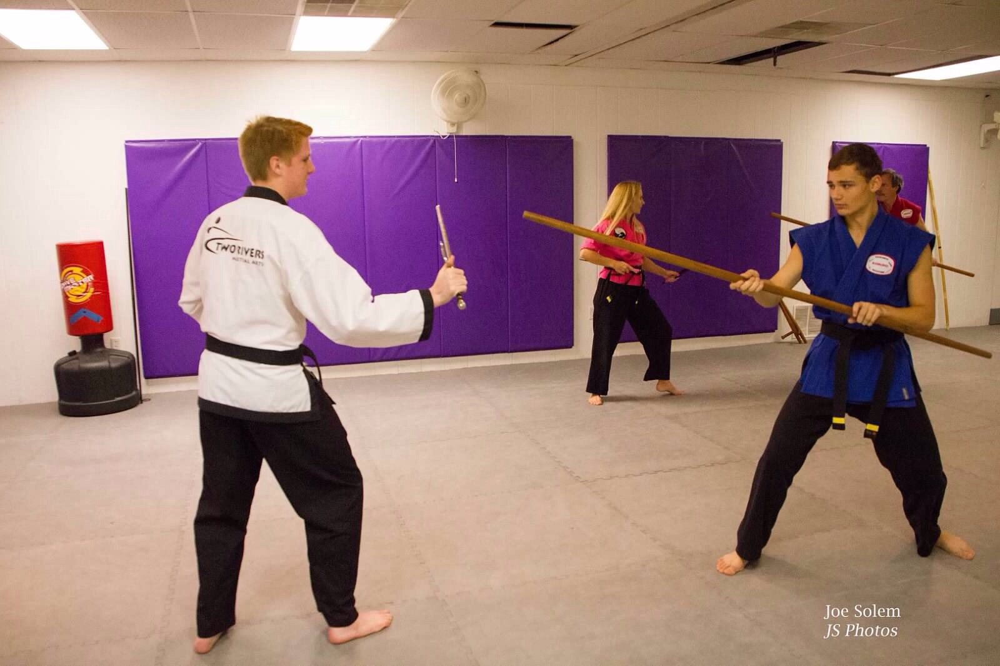

Okinawan Kobudo

Kobudo is an ancient art of Okinawan Weaponry. Introductory weapons for the beginning Kobudo student will consist of;
Bo, Sai, Nunchaku and Tonfa
The Two Rivers Martial Arts Kobudo class is currently open only to Two Rivers Black Belt students
| Okinawan Kobudo is an ancient art of Okinawan Weaponry training derived from the islands fishing and farming industry in the early 17th century. The Two Rivers Martial Arts Kobudo class is currently open to Two Rivers Black Belt students with 4 introductory weapons. | |
|---|---|
| Bo, or long staff
The Bo is usually made with wood and derived from Farmers carrying water and fishermen navigating their boats. Its use as a weapon is great as it has the ability to defend the carrier with a 360-degree range. |
|
| Sai trident
Speculation dictates that the sai was a tool used for planting crop, mainly rice. As it is made of steel it is a weapon with many uses, and when training you use a pair. |
|
| Nunchaku
Nunchakus are mainly made of wood with a chain or rope Holding the two pieces together. It develops the practitioners hand movements to become swift and precise. |
|
| Tonfa
Tonfas are in general made from white or red oak. They Should cover the practitioners lower arm when held |
|
| Attire
The Kobudo students may wear dobok of choice but need to consider each weapons movements and individual ability to snag on anything loose or hanging. This is a weapons class and safety is a first priority |
|
| Class
Students need to bring all weapons to each class as during each lesson there will be interchanges. For more information please contact Mr. Hornback as space is at times limited due to size of the weapons and space needed for each student to maneuver them safely |
|

|
|
|

|

|

|

|

|
Please visit the following links for more Kobudo related information:
Please visit our Senior Grandmaster Bob Likes
Check out the Kobudo Weapons pictures on Shutterfly (Account Required - Contact Mr. HornBack for information)!"
Check out the article published in Tae Kwondo Times magazine
Click here for more pictures!